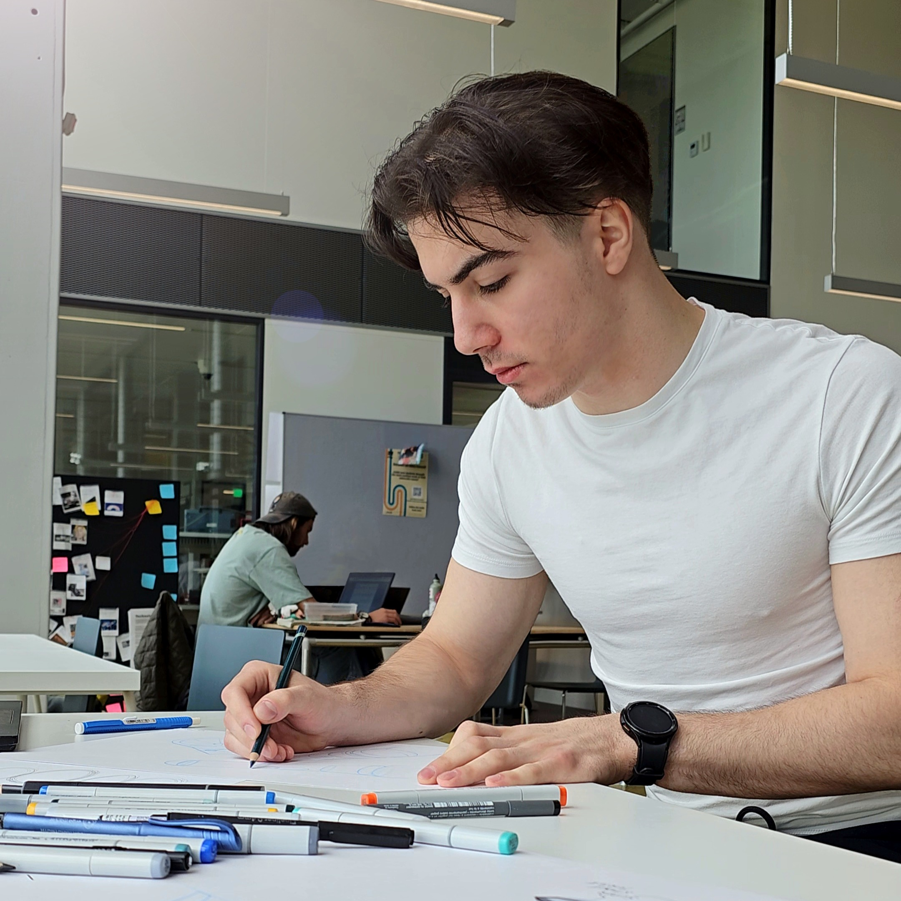

My professional identity
I enjoy finding solutions to problems and implementing ideas through clever design. This is something any engineer might say. What a typical engineer might neglect though, is to think about ways to incorporate sleek looks into a design. This is where I place myself as a designer. I am interested in blending robust and effective engineering solutions with eye-pleasing aesthetics. Consequently, the expertise areas of Technology & Realisation and Creativity & Aesthetics draw my attention the most. I position myself as more of a traditional industrial designer with an interest in creating tangible, pleasant-to-use products, especially devices that feature electronics.
In my early education, I learned harder engineering skills such as modelling in CAD and understanding how to use software to create and execute a design with robust construction that fulfils specific functions. The university courses, on the other hand, complemented this knowledge by teaching me about the importance of the design process, and the cycle of analysing, ideating, developing, and executing a design. I find myself confident in being able to evaluate the feasibility of a design as well as be able to account for the needs and desires of consumers and/or society.
While I am already competent in Technology & Realization and some aspects of Creativity & Aesthetics, I discovered a desire to learn about entrepreneurship and the business aspect of design. My dream is to start a company that brings technological innovation to the market or hold an influential leadership position at a company that does so. I’ve developed myself in this direction by taking multiple courses focused on Business and Entrepreneurship, most notably the Technology Entrepreneurship three-course USE line.

Christian von Koenigsegg inside Koenigsegg Gemera (Koenigsegg 2019)
For this reason, I am especially inspired by successful company founders. For instance, Christian von Koenigsegg, a Swedish founder and CEO, who was able to breach the difficult-to-enter automotive industry in 1994 with his company Koenigsegg, bringing excellent design and a number of innovations to the industry. This includes the introduction of carbon fibre chassis, a unique way of opening the doors of his cars or the Triplex suspension system, to name a few. I hope to breach the industry (not necessarily automotive) in a similar way one day.
Vision
I look forward to a bright future for humanity, but I expect that the current world situation will create new challenges that will demand us to change the way we live. While I am a large proponent of shifting towards the digital and utilizing the latest consumer technologies to their full potential, I also believe that industrial design should create a better balance between the physical and digital worlds. I hope to see society becoming less reliant on using screens and smartphones which, in their current form, serve to many as attention-shortening devices. Technology should enable us to make life richer and more fulfilling, but not be its focal point.
Furthermore, industrial designers should aim to foster their ability to anticipate future change and strive to be visionaries. The better can a designer leverage existing insights to predict an upcoming trend early, the higher their chance to make an influential product that will bring true innovation to the market. Rather than reacting to and incrementally improving on existing designs, an industrial designer should strive to at least try to do things differently, however difficult that may be in today’s hyperconnected age. To do so, designers must stay up to date with new trends and innovations. They must be lifelong learners and generalists with a wide breadth of knowledge.
With industrial design being as broad as it is, I find it difficult and perhaps unnecessary, to narrow down my focus to specific areas. A designer’s passions and interests should be allowed to change and evolve over time. That said, one area I find fascinating and see a lot of potential in is additive manufacturing, as 3D printing has been my long-term interest. While the technology is ideal and well-used from the prototyping standpoint, I believe it will also gain prominence outside of prototyping, especially with the AI design capabilities now available. One of the main reasons for this is that I see the trend of personalisation of products becoming more important. Brands will be able to appeal to their customers’ specific wants and needs without drastically raising the costs. This can be a custom shape or pattern on a product or a more complex item such as a prosthetic limb or custom-fit wearable gear, such as skiing shoes. With additive manufacturing, it is possible to adjust the product to perfectly fit the customer’s body or preferences.